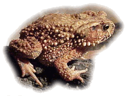

Вьетнамская горная жаба
Mountain toad
(Bufo galeatus)
Вьетнамская горная жаба, шлемоголовая жаба (Bufo galeatus), фото с сайта zooekzotika.narod.ru Другие названия: вьетнамская горная жаба, шлемоголовая жаба.
Ареал: Вьетнам, Таиланд, Кампучия (до 1300 м над уровнем моря).
Описание: вьетнамская горная жаба: у самок развитые паротиды переходят в мощные костные выросты на голове, образуя высокие гребни. Бока и лапы покрыты шипами.
Окрас: спина и голова жабы шоколадно-коричневые, бока - красно-кирпичные, живот серый, с разводами. Самцы окрашены более скромно.
Размер: самки - до 11 см, самцы - до 4-5 см.
Среда обитания: первичные горные леса с плотным растительным покровом, изобилующих ручьями.
Пища/еда: вьетнамская горная жаба поедает разнообразных беспозвоночных: как мелких, так и крупных.
Размножение: в период размножения вьетнамская горная жаба собирается у чистых ручьев, где выбирает небольшие мелководные заводи со спокойной водой и гравийным дном. Самцы, чаще сидя в воде, мелодичными, характерными криками подзывают самок. За 10-12 часов до нереста самка с самцом на спине уходит в воду, где остается до окончания икрометания, сразу после которого выбирается на берег и начинает питаться. Икра откладывается длинными студневидными шнурами, которые обматываются вокруг подводных камней и содержат 2500-3000 сначала серых, но быстро чернеющих икринок диаметром около 2,5 мм. Через сутки оболочка шнуров разбухает, и икринки опускаются на дно.
Сезон/период размножения: март-май. При содержании в неволе может быть несколько кладок за год.
Инкубация: сутки.
Потомство: личинки вьетнамской горной жабы плоские ланцетовидные, висят на стенках водоема и камнях. На третьи сутки личинки вьетнамской горной жабы начинают плавать, а на шестые - питаться. У будущих самок (в возрасте 1 месяц) отчетливо видны выросты на голове, более выражена бугристость кожи.
Популяция/статус сохранения: вьетнамская горная жаба - редкий вид. Внесена в Красную книгу Вьетнама.
Использованная литература:
Сайт НПФ "Зооком" (http://www.zoocom.ru/bufogal.shtmll)